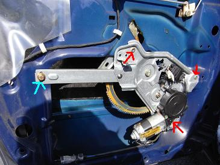
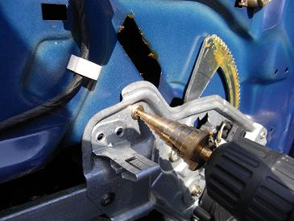
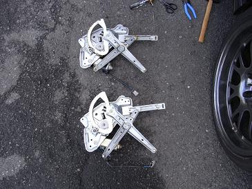
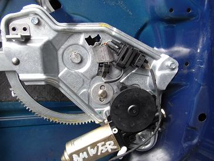
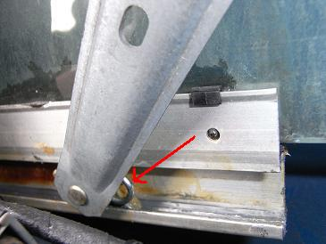
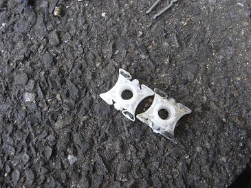

 レギュレーターは、ボルト１ヶ所（水色の矢印）と3ヶ所のリベット（赤色の矢印）と スライドピースのピン（2ヶ所）の計6ヶ所で固定されている。
|
 3ヶ所のリベットをドリルで揉んで外します。8mmのドリルを使うとジャストフィットだ。 ドリルを使う前に、パワーウィンドウを一番下まで下げておく。そうしておくことによって、スライドピースのピンが外しやすくなる。
|
 上が取り外した調子の悪いもの。特に見た目は普通であった。 レギュレーターを取り外すと、ガラスが落ちるので、誰かにガラスを持ってもらっておくと作業がしやすい。
|
 新しいレギュレーターを取り付ける時は、リベットで固定してあった3ヶ所をボルトとナットで固定するのだ。
|
 スライドピースのピンも忘れずに取り付けて完成。 ここで、スムーズにウインドーが上下するか確認をしておく。 どちらかに偏ってしまったり、スムーズに動かないようであれば、もう一度ボルトを緩めて調整する。
|
 スライドピースも交換しようと準備していたのだが、取り付けてみると固くてスムーズに動かなかった。。 なので、今回は元々の物を再利用した。
|